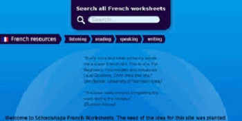
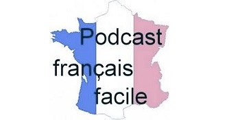

Lawless French
- Website
- This website has a list of a ton of listening videos and exercises. The material covers a wide range of vocabulary that beginners to advanced learners can follow.

french-resources.org
- Website
- This website contains not only listening practice but listening lessons on how to improve your french. While most downloads are mainly for listening purposes, they can also help with pronunciation and speaking as listed on the site.
Journal En Francais Facile
- Website
- A daily news podcast by Radio France Internationale aimed specifically at people learning French. All episodes include a transcription.

Podcast Francais Facile
- Website
- Another set of podcasts aimed at learners of French, varying from A1 to B2 in diffculty. There are also transcriptions avaliable for most.